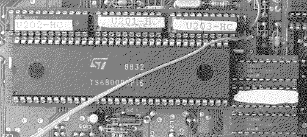
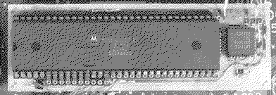
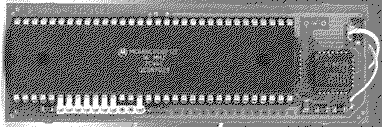

Previous
Next
TOC
Die Beschleunigerboards für die ST-Computer
Der Hypercache ST+ von ProVME

CPU Takt 8 oder 16MHz
Cachegröße 16 Kilobyte
Blitterpatch integriert
16Mhz werden selber generiert
Soundchip schaltet den Cache ein oder aus (Drahtverbindung)
Die Turbo 16 Version 1

CPU Takt 8 oder 16MHz
Cachegröße 16 Kilobyte
16Mhz kommen vom Videochip (Pin 39 oder Pin 5 der MCU)
Soundchip schaltet den Cache ein oder aus (Drahtverbindung)
Die Turbo 16 Version 2

CPU Takt 8 oder 16MHz
Cachegröße 32 Kilobyte
16Mhz kommen vom Videochip (Pin 39 oder Pin 5 der MCU)
Soundchip (Pin 14) schaltet den Cache ein oder aus (Drahtverbindung)
oder über einen prellfreien Schalter
FASTROM-Betriebsart bei Eproms schneller 100ns Zugriffszeit
weiterblättern
Kapitel Die Beschleunigerboards, Seite 1